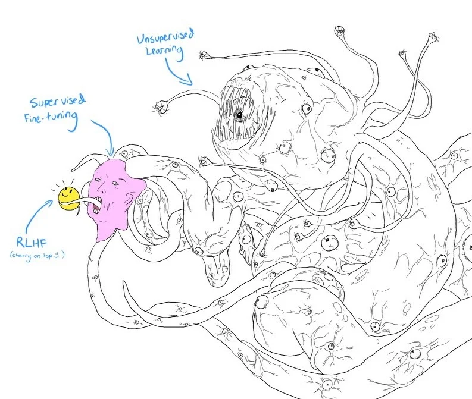

Последующее обучение

Предобучение даёт знания.
Последующее учит ими пользоваться
Учится угадывать следующий токен — и попутно узнаёт о мире почти всё.
На примерах и оценках людей — так, чтобы ответ был полезен и уместен.
Решить две проблемы предобученной модели
Токен за токеном против ответа целиком
Оптимизирует качество на уровне токенов: модель учится точно предсказывать следующий токен.
Оптимизирует модель для генерации ответов, предпочитаемых людьми.
чтение ради получения знаний
обучение тому, как использовать эти знания
Ресурсов нужно гораздо меньше, чем на предобучение
Последующее обучение раскрывает возможности, которые уже есть у предобученной модели, но которые трудно получить только через запросы
Последующее обучение включает два этапа
учит вести беседу
учит отвечать так, как предпочитают люди
Последующее обучение у каждой модели своё — это общая схема.
SFT учит модель вести беседу, а не завершать текст
Supervised finetuning: предобученную модель дообучают на высококачественных инструктивных данных
Учит отвечать так, как предпочитают люди
Обычно выполняется методом обучения с подкреплением (reinforcement learning, RL)
reinforcement learning from human feedback
Предобучение → SFT → RLHF
низкого качестваПредобучению нужен объём, а не качество: всё, что удалось собрать в интернете. Подробно — в первом докладе вечера.
данные из ИнтернетаСнимки веба вроде Common Crawl: триллионы токенов, а среди них — мусор, ложь и токсичные тексты.
высокого качестваМало, но качественно: пары, написанные людьми. У InstructGPT их около 13 000.
от человекаЛюди не пишут ответы, а сравнивают готовые: какой лучше. Это дешевле — $3,5 за сравнение против $25 за ответ (Llama 2).
(промты)Только запросы, без ответов — например, реальные запросы пользователей. Ответы пишет сама модель.
Схема похожа на улыбающегося Шоггота

1 2 3Неукротимый монстр: вырос на неструктурированных данных из интернета.
Человеческое лицо-маска: Stack Overflow, Quora, ответы людей — монстр становится социально приемлемее.
Смайлик, «вишенка на торте»: модель становится подходящей для клиентов.
Предобученная модель продолжает, а не отвечает
Модель имитирует данные — покажите ей, как надо
Разным запросам — разные ответы
Хорошим ответам нужны хорошие учителя
Обвести объект на фото: часто хватает минимума специальных знаний
- критического мышления
- сбора информации
- оценки, уместен ли запрос
Поэтому зовут высококвалифицированных маркировщиков
Не по карману эксперты? LAION позвала добровольцев
Маркировщики должны быть репрезентативной выборкой человеческой популяции
90% добровольцев в самоотчёте указали, что они мужчины
DeepMind искала беседы простыми эвристиками
[A]: …[B]: …[A]: …[A]: …[B]: …[A]: …[A]: [короткий абзац]
[B]: [короткий абзац]
[A]: [короткий абзац]
[B]: [короткий абзац]
…
[A]: …[B]: …[A]: …[B]: …Специалисты DeepMind утверждали, что такие эвристики надёжно поставляют качественные диалоги.
Меньше зависеть от людей — синтетические данные
До 30 минут на пару «запрос — ответ», и каждого маркировщика нужно найти и обучить.
Подробно о них — в восьмой главе книги.
Технически модель можно обучать на демонстрациях с самого начала, без предобучения. Но с предобучением результат обычно лучше.
Демонстрации учат беседовать, но не тому, какие беседы вести
Здесь большинству людей ответ очевиден
А если ответ неочевиден?
Люди с разными культурными, политическими, социальными, гендерными и религиозными взглядами часто не согласны друг с другом
Цель — чтобы AI вёл себя в соответствии с человеческими предпочтениями
Боязнь, что модель сгенерирует неподобающий ответ, мешает компаниям выпускать свои приложения
Цель предполагает, что универсальные человеческие предпочтения существуют…
что их можно встроить в AI
Первый успешный алгоритм — RLHF. Два шага
Она будет оценивать выводы базовой модели.
Чтобы она генерировала ответы, за которые модель вознаграждения даст максимальные оценки.
«Превосходные способности LLM в написании текстов… в первую очередь обусловлены RLHF»Авторы Llama 2 · Туврон и др., 2023 ↗
Всё популярнее DPO — прямая оптимизация предпочтений
Перешли, чтобы уменьшить сложность. А автор книги разбирает RLHF: он сложнее, но даёт больше гибкости в настройке модели.
RLHF держится на модели вознаграждения
Научить модель оценивать входные данные — обычная задача ML. Сложность, как и в SFT, — получить надёжные данные.
Балл за каждый ответ — оценки гуляют
Независимая оценка каждого примера — точечная оценка (pointwise evaluation)
Одна и та же пара «запрос — ответ», шкала от 1 до 10
Проще попросить сравнить два ответа
человек или AI генерирует несколько ответов, а маркировщик решает, какой лучше
«Правильный» ответ — дело вкуса
«Не уверена, что понимаю, о чём вы».
«Не думаю, что стоит. Собаке важно познавать мир на трезвую голову».
Но и одно сравнение — это 3–5 минут
Нужно проверить факты в каждом из ответов
Сравнение — $3,5, ответ с нуля — $25
Так размечали сравнения для InstructGPT
Кратко перескажи новостную статью:
====
{статья}
====
пересказ 1
Одно ранжирование — три пары для обучения
Чтобы ускорить разметку, маркировщик оценивает сразу несколько ответов
Функция потерь: увеличить разрыв между хорошим и плохим
rθобучаемая модель вознаграждения с параметрами θxзапросywхороший ответylплохой ответσсигмоида: превращает разницу оценок в число от 0 до 1Exсреднее по всем обучающим тройкамМодель SFT учится получать максимальные оценки
Запрос → ответ → оценка — и снова по кругу
Запросы случайным образом выбирают из множества вариантов. Они попадают в модель, а её ответы оценивает модель вознаграждения.
Например, из существующих запросов пользователей
Обычно этот цикл крутит PPO
сама модель: по запросу она выбирает ответ
модель подправляют, чтобы оценка модели вознаграждения росла
«ближайшая»: каждый шаг небольшой, модель не уходит далеко от прежней версии
RLHF и DPO улучшают модель сильнее, чем одно SFT
Установлено эмпирически. А вот почему они работают — на момент написания книги спорили
Ответы модели на 1,3 млрд параметров люди предпочли ответам GPT-3 на 175 млрд — при том что параметров в 100 раз меньше
SFT и предпочтения — заплатка на плохие данные
Низкое качество данных для предварительного обучения
SFT и дообучение с учётом предпочтений — шаги, чтобы её исправить
Данные станут качественнее или обучение эффективнее — и эти шаги не понадобятся
Без RL: сгенерировать N ответов — выбрать лучший
Так делают Stitch Fix ↗ и Grab ↗: им хватает одной модели вознаграждения. Это стратегия «лучшее из N» — она уже про сэмплирование.
Выводы
Предобучение даёт знания, последующее обучение раскрывает их — и стоит всего пару процентов вычислений.
SFT учит вести беседу на демонстрациях «запрос — ответ». Хорошие демонстрации пишут дорогие эксперты.
Предпочтения собирают сравнениями: на них учится модель вознаграждения, а модель SFT — получать от неё высокие оценки. Проще — DPO.
Цель спорная: универсальных предпочтений может и не быть, а сами шаги — заплатка на плохие данные.

«Если бы цель была простой, решение могло бы быть элегантным»Чип Хьюен · AI-инженерия, глава 2
Что далее
 Антон Помазков
Антон Помазков
 Артём Никифоров
Антон Помазков
Артём Никифоров
Артём Никифоров
Антон Помазков
Артём Никифоров